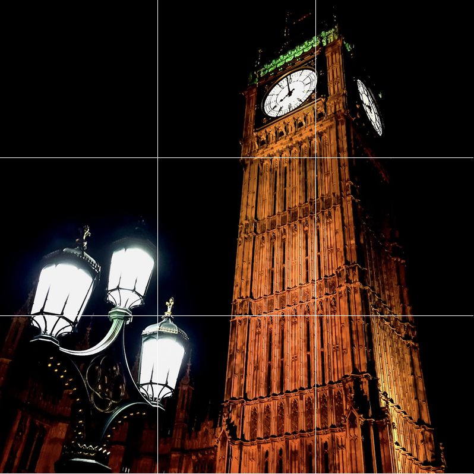
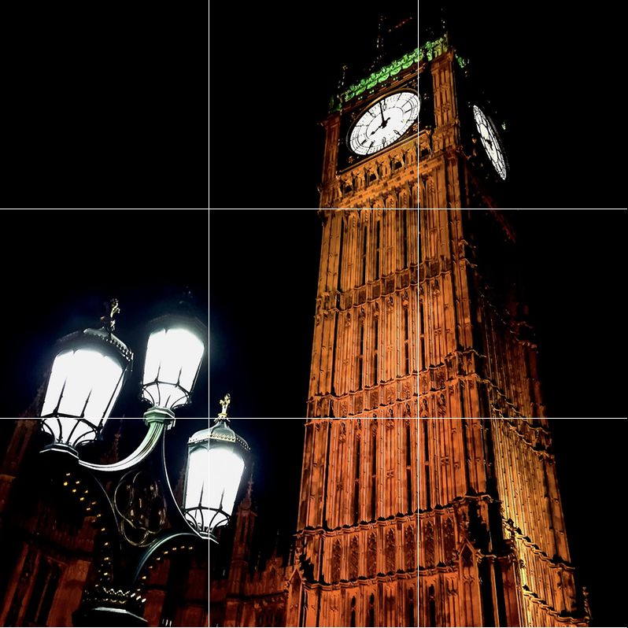

About Me
I’m Rahul Kumar Prajapat, a self-taught web developer and content writer passionate about creating responsive, visually appealing websites and engaging content. I blend creativity with technical skills to build impactful digital experiences.
Download ResumeEducation
- Bachelor’s in Computer Applications - Manipal University, Jaipur(2024-27)
- Advanced Web Development - Online Course(2021)
- Content Writing Mastery - E-learning
- Schooling - Sainik School, Chittorgarh
Skills
Web Development
- HTML5 & CSS3
- JavaScript (ES6+)
- React.js
- Node.js
- Git & GitHub
- Responsive Design
- REST APIs
- Web Accessibility
Content Writing
- SEO Writing
- Blog Writing
- Copywriting
- Technical Writing
- Social Media Content
- Editing & Proofreading
- Storytelling
Hobbies
I enjoy hiking, photography, travelling and singing. These activities inspire my creativity and keep me balanced.
 


Experience
As a self-employed professional, I’ve honed my skills through personal projects, building websites like this portfolio and writing content for blogs and social media. My work reflects my ability to deliver professional-quality results independently.